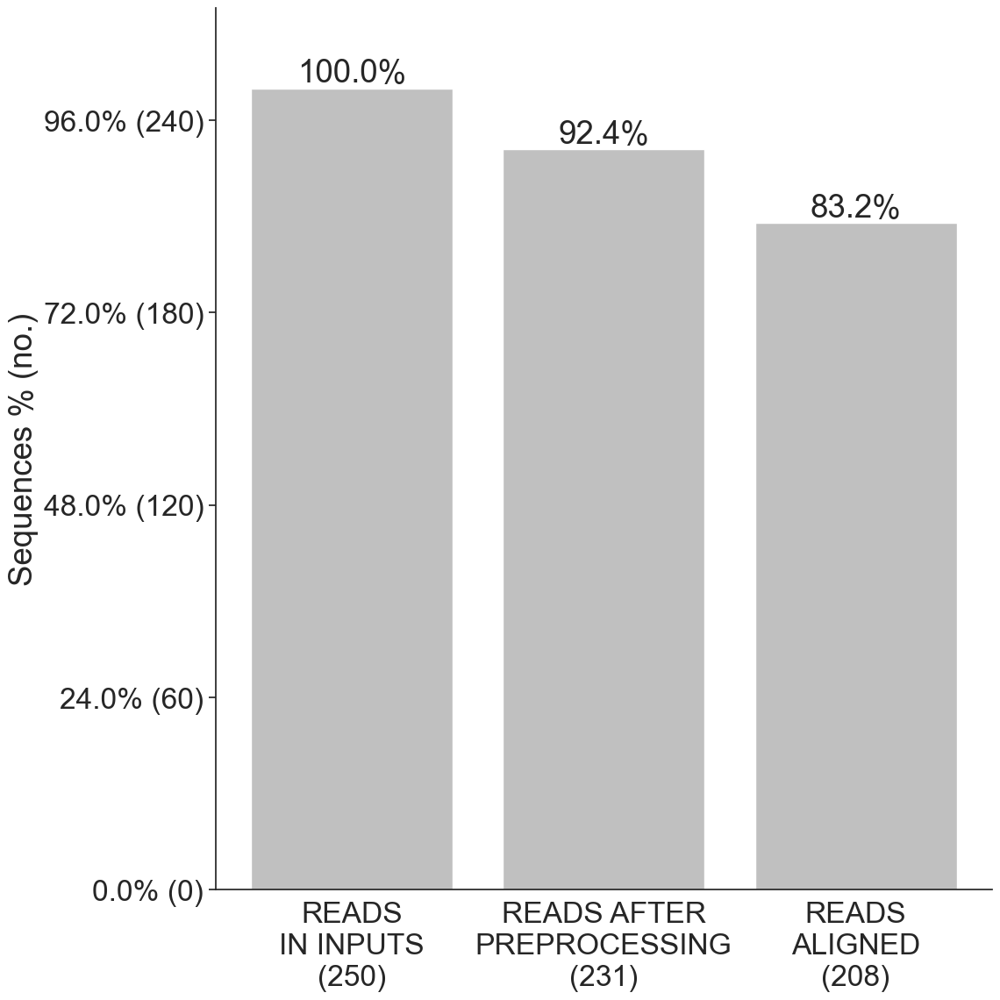
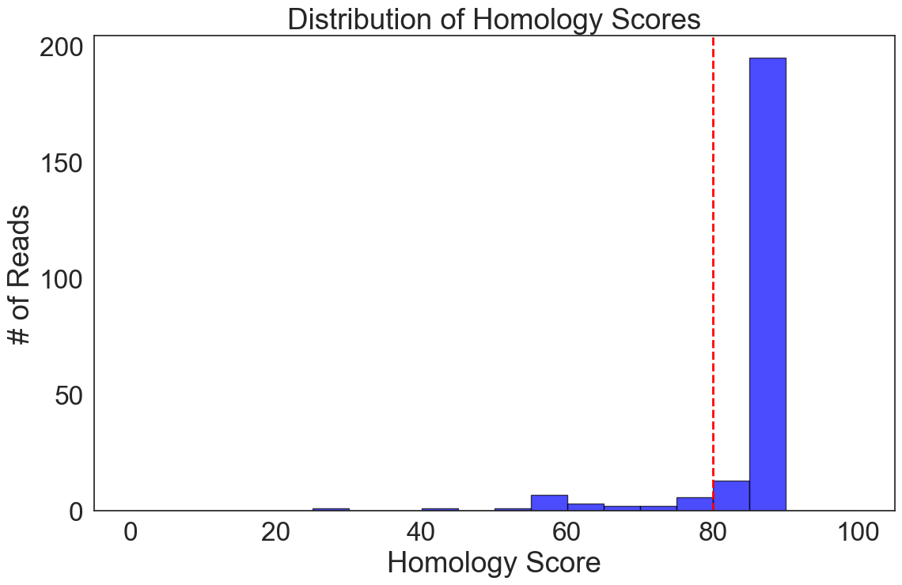
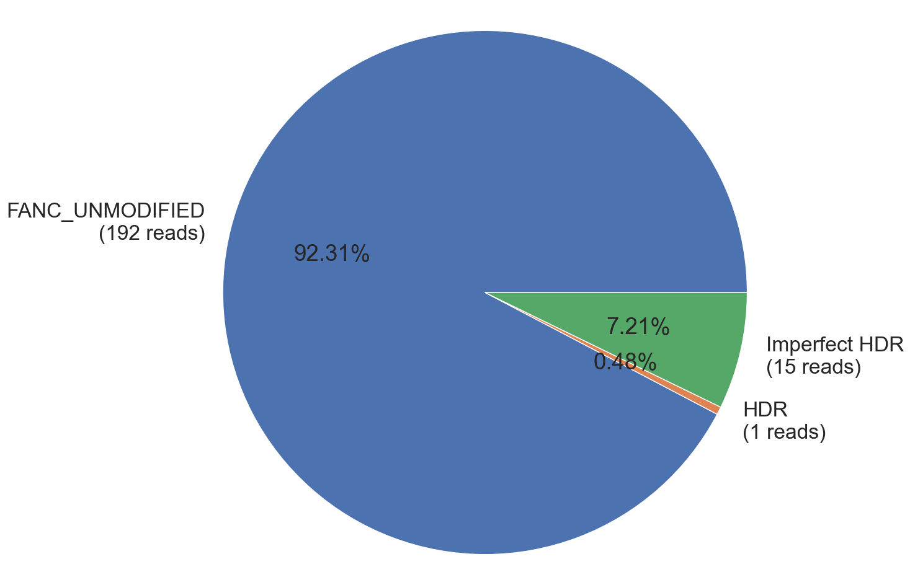
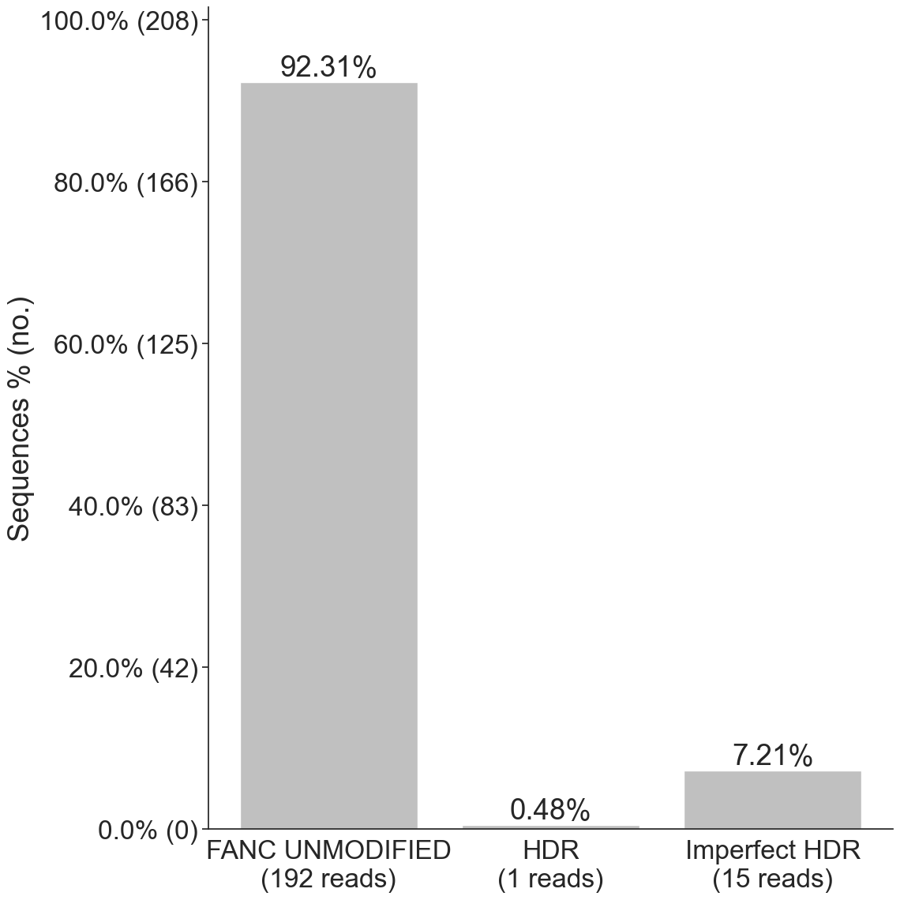
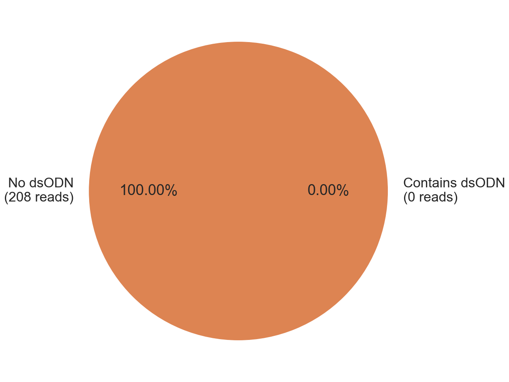
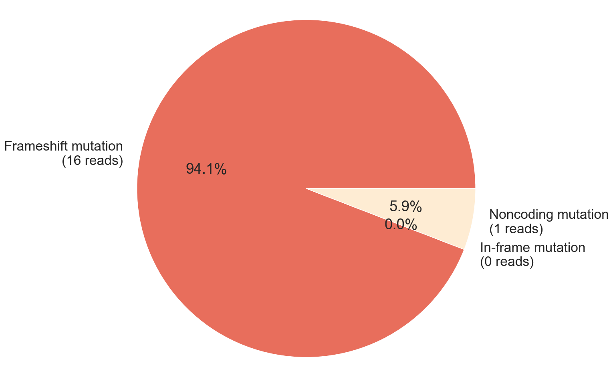
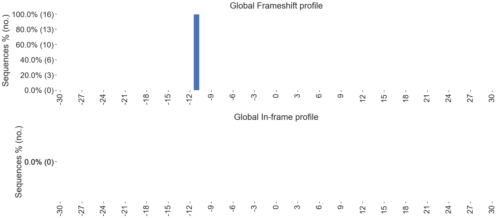
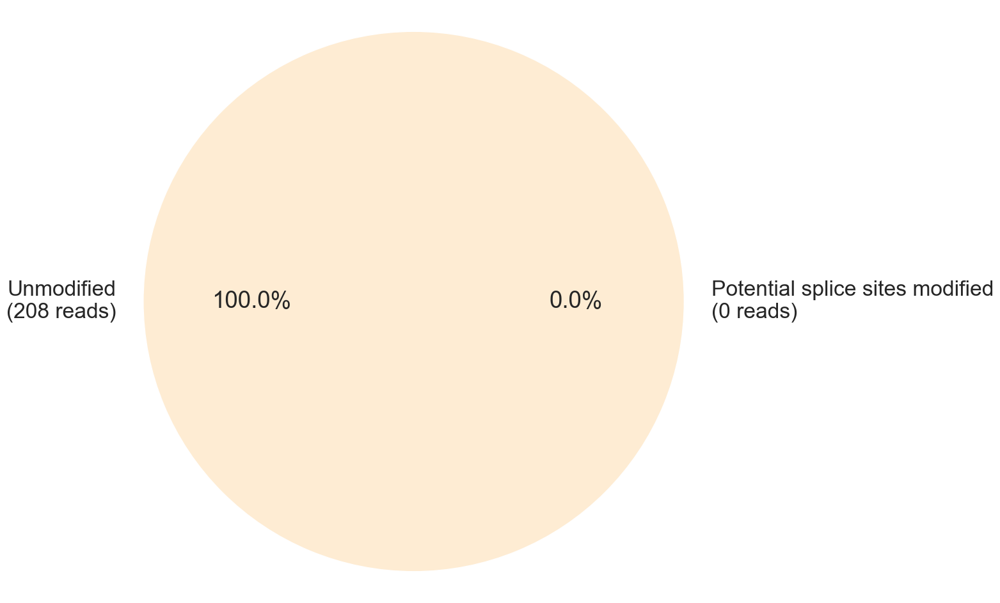
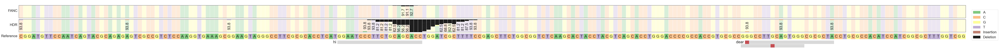

CRISPResso2
Analysis of genome editing outcomes from deep sequencing data
CRISPRessoPro — faster compute, priority queues, long-term storage, and advanced reporting. Learn more.
Figure 1a: The number of reads in input fastqs, after preprocessing, and after alignment to amplicons.
Figure 1e: Distribution of read alignment homology scores, showing the best-scoring alignment of each sequencing read to the provided amplicons. The dashed line indicates the minimum alignment score threshold used to discard low-quality alignments.
Figure 1b: Alignment and editing frequency of reads as determined by the percentage and number of sequence reads showing unmodified and modified alleles. NHEJ reads align more closely to the unmodified reference sequence, but have mutations present in the specified quantification window. HDR reads align to the HDR reference sequence and have no mutations in the specified quantification window. Imperfect HDR reads have mutations in the specified window. AMBIGUOUS reads align equally well to the unmodified and HDR reference sequences.
Figure 1c: Alignment and editing frequency of reads as determined by the percentage and number of sequence reads showing unmodified and modified alleles.
Figure 1d: Frequency of detection of dsODN GCTAGATTTCCCAAGAAGA
Figure 5a: Frameshift analysis of coding sequence reads affected by modifications for all reads. Unmodified reference reads are excluded from this plot, and all HDR reads are included in this plot.
Figure 6a: Frameshift and in-frame mutagenesis profiles for all reads indicating position affected by modification. The y axis shows the number of reads and percentage of all reads in that category (frameshifted (top) or in-frame (bottom)). 0 reads with no length modifications are not shown.
Figure 8a: Predicted impact on splice sites for all reads. Potential splice sites modified refers to reads in which the either of the two intronic positions adjacent to exon junctions are disrupted.
Figure 4g: Nucleotide distribution across all amplicons. At each base in the reference amplicon, the percentage of each base as observed in sequencing reads is shown (A = green; C = orange; G = yellow; T = purple). Black bars show the percentage of reads for which that base was deleted. Brown bars between bases show the percentage of reads having an insertion at that position.
CRISPRessoPro — faster compute, priority queues, long-term storage, and advanced reporting. Learn more.
Guardrails — 7 out of 11 failed
Failed Guardrails (7)
Guardrail Warning! Low number of total reads: <10000. Total reads: 231.
Guardrail Warning! Disproportionate percentages of reads were aligned to amplicon: FANC, Percent of aligned reads aligned to this amplicon: 83.12%.
Guardrail Warning! Disproportionate percentages of reads were aligned to amplicon: HDR, Percent of aligned reads aligned to this amplicon: 6.93%.
Guardrail Warning! >=1.0% of reads have modifications at the start or end. Total reads: 208, Irregular reads: 208.
Guardrail Warning! >=0.2% of substitutions were outside of the quantification window. Total substitutions: 113, Substitutions outside window: 97.
Guardrail Warning! >=30.0% of modifications were substitutions. This could potentially indicate poor sequencing quality. Total modifications: 223, Substitutions: 113.
Guardrail Warning! Guide length <19: CCCACTGCAAGGCCC, Length: 15.
Passed Guardrails (4)
Guardrail Passed: Read alignment rate above threshold. 90.0% of reads aligned.
Guardrail Passed: Sufficient ratio of modifications inside quantification window.
Guardrail Passed: All amplicon lengths above minimum threshold (50).
Guardrail Passed: Amplicon lengths within acceptable range of read lengths.
params
CRISPResso2 run information

Data: Mapping statistics
CRISPResso version: 2.3.4
Run completed: 2026-04-03 11:08:12
Amplicon sequence:
CGGATGTTCCAATCAGTACGCAGAGAGTCGCCGTCTCCAAGGTGAAAGCGGAAGTAGGGCCTTCGCGCACCTCATGGAATCCCTTCTGCAGCACCTGGATCGCTTTTCCGAGCTTCTGGCGGTCTCAAGCACTACCTACGTCAGCACCTGGGACCCCGCCACCGTGCGCCGGGCCTTGCAGTGGGCGCGCTACCTGCGCCACATCCATCGGCGCTTTGGTCGG
Guide sequence:
GGAATCCCTTCTGCAGCACC
Command used:
/Users/cole/code/edilytics/CRISPResso2/.pixi/envs/test/bin/CRISPResso -r1 inputs/FANC.Cas9.fastq -a CGGATGTTCCAATCAGTACGCAGAGAGTCGCCGTCTCCAAGGTGAAAGCGGAAGTAGGGCCTTCGCGCACCTCATGGAATCCCTTCTGCAGCACCTGGATCGCTTTTCCGAGCTTCTGGCGGTCTCAAGCACTACCTACGTCAGCACCTGGGACCCCGCCACCGTGCGCCGGGCCTTGCAGTGGGCGCGCTACCTGCGCCACATCCATCGGCGCTTTGGTCGG -g GGAATCCCTTCTGCAGCACC -e CGGCCGGATGTTCCAATCAGTACGCAGAGAGTCGCCGTCTCCAAGGTGAAAGCTGAAGTAGGGCCTTCGCGCACCTCATGGAATCCCTTCTGCAGCTTTTCCGAGCTTCTGGCGGTCTCAAGCACTACCTACGTCAGCACCTGGGACCCCGCCACCGTGCGCCGGGCCTTGCAGTGGGCGCGCTACCTGCGCCACATCCATCGGCGCTTTGGTCGG -c GGGCCTTCGCGCACCTCATGGAATCCCTTCTGCAGCACCTGGATCGCTTTT --dump -qwc 20-30_45-50 -q 30 --default_min_aln_score 80 -an FANC -n params --base_editor_output -fg AGCCTTGCAGTGGGCGCGCTA,CCCACTGAAGGCCC --dsODN GCTAGATTTCCCAAGAAGA -gn hi -fgn dear -p max --base_editor_consider_changes_outside_qw --place_report_in_output_folder --halt_on_plot_fail --debug
Parameters:
allele_plot_pcts_only_for_assigned_reference: False aln_seed_count: 5 aln_seed_len: 10 aln_seed_min: 2 amplicon_coordinates: amplicon_min_alignment_score: amplicon_name: FANC amplicon_seq: CGGATGTTCCAATCAGTACGCAGAGAGTCGCCGTCTCCAAGGTGAAAGCGGAAGTAGGGCCTTCGCGCACCTCATGGAATCCCTTCTGCAGCACCTGGATCGCTTTTCCGAGCTTCTGGCGGTCTCAAGCACTACCTACGTCAGCACCTGGGACCCCGCCACCGTGCGCCGGGCCTTGCAGTGGGCGCGCTACCTGCGCCACATCCATCGGCGCTTTGGTCGG annotate_wildtype_allele: assign_ambiguous_alignments_to_first_reference: False auto: False bam_chr_loc: bam_input: bam_output: False base_editor_consider_changes_outside_qw: True base_editor_output: True base_editor_target_ref_skip_allele_count: 0 bowtie2_index: coding_seq: GGGCCTTCGCGCACCTCATGGAATCCCTTCTGCAGCACCTGGATCGCTTTT coding_seq_name: config_file: None conversion_nuc_from: C conversion_nuc_to: T crispresso1_mode: False crispresso_merge: False debug: True default_min_aln_score: 80 disable_guardrails: False discard_guide_positions_overhanging_amplicon_edge: False discard_indel_reads: False display_name: dsODN: GCTAGATTTCCCAAGAAGA dump: True exclude_bp_from_left: 15 exclude_bp_from_right: 15 expand_allele_plots_by_quantification: False expand_ambiguous_alignments: False expected_hdr_amplicon_seq: CGGCCGGATGTTCCAATCAGTACGCAGAGAGTCGCCGTCTCCAAGGTGAAAGCTGAAGTAGGGCCTTCGCGCACCTCATGGAATCCCTTCTGCAGCTTTTCCGAGCTTCTGGCGGTCTCAAGCACTACCTACGTCAGCACCTGGGACCCCGCCACCGTGCGCCGGGCCTTGCAGTGGGCGCGCTACCTGCGCCACATCCATCGGCGCTTTGGTCGG fastp_command: fastp fastp_options_string: fastq_output: False fastq_r1: inputs/FANC.Cas9.fastq fastq_r2: file_prefix: flash_command: None flexiguide_gap_extend_penalty: -2 flexiguide_gap_open_penalty: -20 flexiguide_homology: 80 flexiguide_name: dear flexiguide_seq: AGCCTTGCAGTGGGCGCGCTA,CCCACTGAAGGCCC force_merge_pairs: False guide_name: hi guide_seq: GGAATCCCTTCTGCAGCACC halt_on_plot_fail: True ignore_deletions: False ignore_insertions: False ignore_substitutions: False keep_intermediate: False max_paired_end_reads_overlap: None max_rows_alleles_around_cut_to_plot: 50 min_average_read_quality: 30 min_bp_quality_or_N: 0 min_frequency_alleles_around_cut_to_plot: 0.2 min_paired_end_reads_overlap: 10 min_single_bp_quality: 0 n_processes: max name: params needleman_wunsch_aln_matrix_loc: EDNAFULL needleman_wunsch_gap_extend: -2 needleman_wunsch_gap_incentive: 1 needleman_wunsch_gap_open: -20 no_rerun: False output_folder: place_report_in_output_folder: True plot_histogram_outliers: False plot_window_size: 20 prime_editing_gap_extend_penalty: 0 prime_editing_gap_open_penalty: -50 prime_editing_nicking_guide_seq: prime_editing_override_prime_edited_ref_seq: prime_editing_override_sequence_checks: False prime_editing_pegRNA_extension_quantification_window_size: 5 prime_editing_pegRNA_extension_seq: prime_editing_pegRNA_scaffold_min_match_length: 1 prime_editing_pegRNA_scaffold_seq: prime_editing_pegRNA_spacer_seq: quantification_window_center: -3 quantification_window_coordinates: 20-30_45-50 quantification_window_size: 1 samtools_exclude_flags: 0 save_also_png: False split_interleaved_input: False stringent_flash_merging: False suppress_amplicon_name_truncation: False suppress_plots: False suppress_report: False trim_sequences: False trimmomatic_command: None trimmomatic_options_string: use_legacy_insertion_quantification: False use_matplotlib: False vcf_output: False verbosity: 3 write_cleaned_report: False write_detailed_allele_table: False zip_output: False

Data: Alleles Homology Scores
Allele assignments



Global frameshift analysis

Global frameshift mutagenesis profiles

Data: Indel histogram for FANC
Data: Indel histogram for HDR
Global splicing analysis

HDR summary report (all reads aligned to FANC)

Data: Nucleotide percentage table for all reads aligned to FANC
Data: Modification percentage table for all reads aligned to FANC
Reads are aligned to each amplicon sequence separately. Quantification and visualization of these reads are shown for each amplicon below: